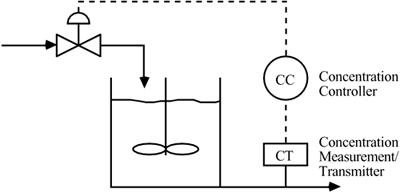
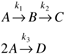

| [ Team LiB ] |
|
M5.1 BackgroundThe reactant conversion in a chemical reactor is a function of the residence time or its inverse, the space velocity. For an isothermal CSTR, the product concentration can be controlled by manipulating the feed flow rate, which changes the residence time (for a constant volume reactor). The feedback strategy is shown in the schematic diagram shown in Figure M5-1. Figure M5-1. Feedback strategy for the isothermal reactor. Here, we consider a series-parallel reaction of the following form (known as the van de Vusse reaction scheme):  The desired product is the component B, the intermediate component in the series reaction. In this module, we find interesting steady-state and dynamic behavior that can occur with this reaction scheme. Klatt and Engell (1998) note that the production of cyclopentenol from cyclopentadiene is based on such a reaction scheme (where A = cyclopentadiene, B = cyclopentenol, C = cyclopentanediol, and D = dicyclopentadiene). |
| [ Team LiB ] |
|